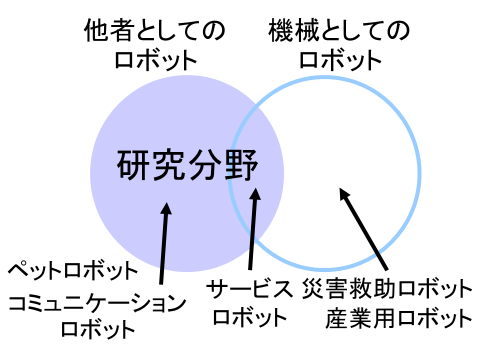

研究内容の紹介
人とふれ合いができるロボットに注目しています。
このようなロボットは、機械であることを超えて、個性を持つことのできる存在（他者）になれると考えています。
特に、子どもに注目し、以下の2つの問いについて考えています。
・子どもにとってロボットが他者となるために、必要なことは何か
・子どもはロボットをどのような存在とみなしているのか
ソフトウェア・ハードウェアの設計と、科学館などでの実地試験に基づく評価から、これらの問いの答えを探ろうとしています。
子どもとロボットのふれ合いを豊かにすることで、子どもや周囲の人々が交流するきっかけになるようなロボットを作ることが目標です。
[研究分野キーワード]
human-robot interaction (HRI), child-robot interaction (CRI), social robotics
[研究分野の参考図]

[研究内容・方法キーワード]
behavior design, group interaction, field trial, science communication